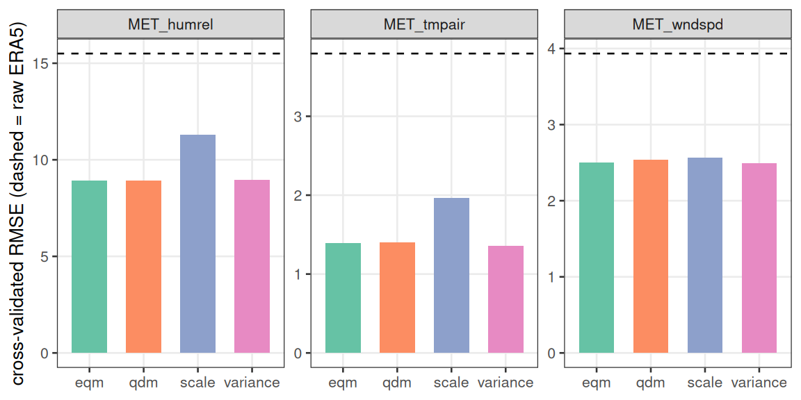

Choosing a bias-correction method
Source:vignettes/bias-correction-methods.Rmd
bias-correction-methods.Rmdfit_met_bias_correction() offers five transfer
functions. This vignette compares them on the bundled Lake Rotorua buoy
record and shows how to read the leave-one-year-out (LOYO) skill table,
so you can pick deliberately rather than taking the default on
faith.
library(metscale)
library(ggplot2)
theme_set(theme_bw(base_size = 10) +
theme(panel.grid.minor = element_blank(), legend.position = "top",
legend.title = element_blank()))
ex <- system.file("extdata", package = "metscale")
tz <- "Etc/GMT-12"
obs <- prepare_obs_met(file.path(ex, "rotorua_buoy_met_aeme_hr.csv.gz"),
resample = "hour", tz = tz, wind_height = 2,
station = "rotorua_buoy", verbose = FALSE)
era5 <- read.csv(file.path(ex, "rotorua_era5_hourly_met.csv.gz"), check.names = FALSE)
era5$Date <- as.POSIXct(era5$Date, tz = tz, format = "%Y-%m-%d %H:%M:%S")The five methods
method |
transfer function | shape it can change |
|---|---|---|
"scale" |
per-month additive offset or ratio | level only |
"variance" |
per-month mean and standard-deviation matching | level + spread |
"linear" |
per-month least squares obs ~ a + b * era5
(robust optional) |
level + linear slope |
"eqm" |
empirical quantile mapping: remap the ERA5 CDF onto the observed CDF | the whole distribution |
"qdm" |
quantile delta mapping: as eqm but
keeps the ERA5 anomaly relative to its training quantile |
distribution, trend-preserving |
transform ("auto" / "additive"
/ "ratio") applies to "scale"; by
("doy-loess" / "month" / "none")
applies to "scale" and is coerced to "month"
for the others. cv = "loyo" (default) adds the
out-of-sample rows to the skill table — always look at those, not the
in-sample corrected rows.
Fit and compare
vars <- c("MET_tmpair", "MET_wndspd", "MET_humrel")
methods <- c("scale", "variance", "eqm", "qdm")
fits <- lapply(methods, function(m)
fit_met_bias_correction(era5, obs, vars = vars, method = m, verbose = FALSE))
names(fits) <- methods
skill <- do.call(rbind, Map(function(f, m)
cbind(method = m, f$skill[f$skill$stage == "cv_corrected", ]),
fits, names(fits)))
raw <- transform(fits[[1]]$skill[fits[[1]]$skill$stage == "cv_raw", ],
method = "raw ERA5")
skill <- rbind(raw[names(skill)], skill)
skill[, c("method", "variable", "bias", "mae", "rmse", "r", "kge")]
#> method variable bias mae rmse r kge
#> 3 raw ERA5 MET_tmpair -3.2312 3.3591 3.7952 0.9274 0.6636
#> 7 raw ERA5 MET_wndspd -3.2290 3.3061 3.9336 0.5865 0.0740
#> 11 raw ERA5 MET_humrel 10.6182 13.3239 15.5025 0.7248 0.4139
#> scale.4 scale MET_tmpair 0.0726 1.5546 1.9684 0.9203 0.7845
#> scale.8 scale MET_wndspd 0.0348 2.0311 2.5646 0.5903 0.5832
#> scale.12 scale MET_humrel -0.2193 8.8087 11.2990 0.7066 0.4532
#> variance.4 variance MET_tmpair 0.0689 1.0463 1.3611 0.9455 0.9439
#> variance.8 variance MET_wndspd 0.0158 1.9787 2.4958 0.5934 0.5921
#> variance.12 variance MET_humrel -0.0368 6.7203 8.9571 0.6700 0.6694
#> eqm.4 eqm MET_tmpair 0.0718 1.0729 1.3926 0.9433 0.9405
#> eqm.8 eqm MET_wndspd 0.0093 1.9798 2.5003 0.5910 0.5899
#> eqm.12 eqm MET_humrel 0.1029 6.6992 8.9293 0.6785 0.6763
#> qdm.4 qdm MET_tmpair 0.0681 1.0803 1.4034 0.9428 0.9383
#> qdm.8 qdm MET_wndspd 0.0244 1.9946 2.5349 0.5883 0.5852
#> qdm.12 qdm MET_humrel 0.0880 6.7088 8.9424 0.6787 0.6761
ref <- skill[skill$method == "raw ERA5", c("variable", "rmse")]
ggplot(subset(skill, method != "raw ERA5"),
aes(method, rmse, fill = method)) +
geom_col(width = 0.65) +
geom_hline(data = ref, aes(yintercept = rmse), linetype = 2) +
facet_wrap(~ variable, scales = "free_y") +
scale_fill_brewer(palette = "Set2", guide = "none") +
labs(x = NULL, y = "cross-validated RMSE (dashed = raw ERA5)")
Figure 1. Leave-one-year-out RMSE by method, dashed
line = raw ERA5, per variable. All four cut the error sharply, but
scale — which only shifts the monthly level — trails
variance / eqm / qdm for air
temperature and humidity, because ERA5’s error at this site is partly a
variance error that a pure offset cannot reach.
Which to use
The choice is a trade-off between present-day fit and how the fit behaves when you push it outside its training range.
For a present-day correction — the corrected series
just has to match the observed climate over the same period — use the
most skilful method. Here that is variance,
eqm or qdm: they cut the LOYO air-temperature
RMSE from 2.0 °C (scale) to about 1.4 °C and lift its KGE
from 0.78 to 0.94, because they correct the day-to-day spread and not
only the level. eqm / qdm additionally fix a
skewed distribution (wind speed, humidity).
For a baseline that will be projected — a
delta-change, or any extrapolation beyond the training quantiles — a
fitted CDF (eqm, qdm) has nothing to say
outside its training range and extrapolates with a flat tail, which
distorts a warmed future series.
vignette("scenario-workflow") therefore uses
"scale" for maximum caution. variance is a
reasonable middle ground when the present-day variance error is large,
as it is here: it is still a linear transform, so it extrapolates
predictably, while recovering most of the spread that scale
leaves behind.
by = "month" vs "doy-loess"
"month" fits 12 independent offsets;
"doy-loess" smooths them across the day-of-year so the
correction does not jump at month boundaries. The smoothed version is
usually a little better out of sample and always gentler on a continuous
series:
b_month <- fit_met_bias_correction(era5, obs, vars = "MET_tmpair",
method = "scale", by = "month", verbose = FALSE)
b_loess <- fit_met_bias_correction(era5, obs, vars = "MET_tmpair",
method = "scale", by = "doy-loess", verbose = FALSE)
rbind(month = b_month$skill[b_month$skill$stage == "cv_corrected", ],
loess = b_loess$skill[b_loess$skill$stage == "cv_corrected", ])[, c("bias", "rmse", "kge")]
#> bias rmse kge
#> month 0.0732 1.9869 0.7822
#> loess 0.0726 1.9684 0.7845Mixing methods per variable
method (and transform) accept a named
vector, so you can quantile-map the skewed fields and keep a plain
offset elsewhere:
bc <- fit_met_bias_correction(
era5, obs,
vars = c("MET_tmpair", "MET_wndspd", "MET_humrel"),
method = c(MET_tmpair = "scale", MET_wndspd = "qdm", MET_humrel = "qdm"),
verbose = FALSE)
bc$skill[bc$skill$stage == "cv_corrected", c("variable", "bias", "rmse", "kge")]
#> variable bias rmse kge
#> 4 MET_tmpair 0.0726 1.9684 0.7845
#> 8 MET_wndspd 0.0244 2.5349 0.5852
#> 12 MET_humrel 0.0880 8.9424 0.6761Apply any of these with apply_met_bias_correction()
(whole record) or bias_correct_daily_baseline() (record →
corrected daily baseline).
See also
-
vignette("scenario-workflow")— why the projected baseline uses"scale", and the delta-change / disaggregation steps that follow. -
vignette("met-data-frames")— preparing the ERA5 and observation frames that go in.